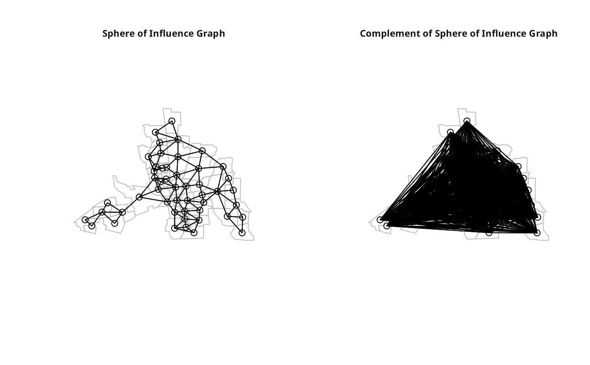
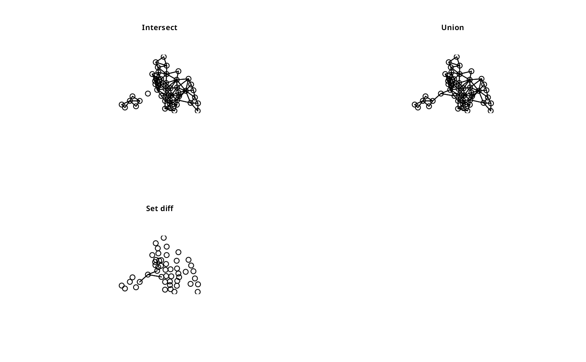

Set operations on neighborhood objects
nboperations.RdSet operations on neighbors list objects
Usage
intersect.nb(nb.obj1,nb.obj2)
union.nb(nb.obj1,nb.obj2)
setdiff.nb(nb.obj1,nb.obj2)
complement.nb(nb.obj)Details
These functions perform set operations on each element of a neighborlist. The arguments must be neighbor lists created from the same coordinates, and the region.id attributes must be identical.
Author
Nicholas Lewin-Koh nikko@hailmail.net
Examples
columbus <- st_read(system.file("shapes/columbus.gpkg", package="spData")[1], quiet=TRUE)
col.gal.nb <- read.gal(system.file("weights/columbus.gal", package="spData")[1])
coords <- st_coordinates(st_centroid(columbus))
#> Warning: st_centroid assumes attributes are constant over geometries
col.tri.nb <- tri2nb(coords)
oldpar <- par(mfrow=c(1,2))
if (require("dbscan", quietly=TRUE)) {
col.soi.nb <- graph2nb(soi.graph(col.tri.nb, coords))
plot(st_geometry(columbus), border="grey")
plot(col.soi.nb, coords, add=TRUE)
title(main="Sphere of Influence Graph", cex.main=0.7)
plot(st_geometry(columbus), border="grey")
plot(complement.nb(col.soi.nb), coords, add=TRUE)
title(main="Complement of Sphere of Influence Graph", cex.main=0.7)
}

par(mfrow=c(2,2))
col2 <- droplinks(col.gal.nb, 21)
#> Warning: some observations have no neighbours
#> Warning: neighbour object has 3 sub-graphs
plot(intersect.nb(col.gal.nb, col2), coords)
#> Warning: neighbour object has 3 sub-graphs
title(main="Intersect", cex.main=0.7)
plot(union.nb(col.gal.nb, col2), coords)
title(main="Union", cex.main=0.7)
plot(setdiff.nb(col.gal.nb, col2), coords)
#> Warning: neighbour object has 46 sub-graphs
title(main="Set diff", cex.main=0.7)
par(oldpar)
